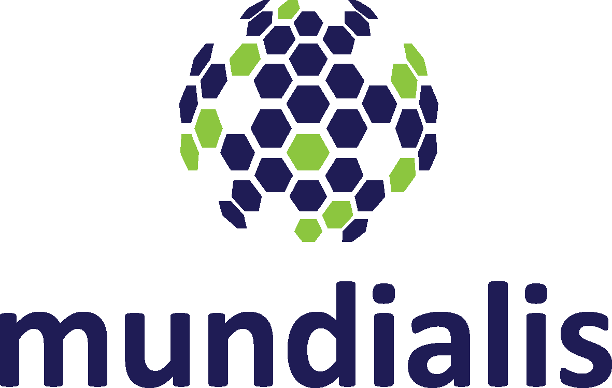
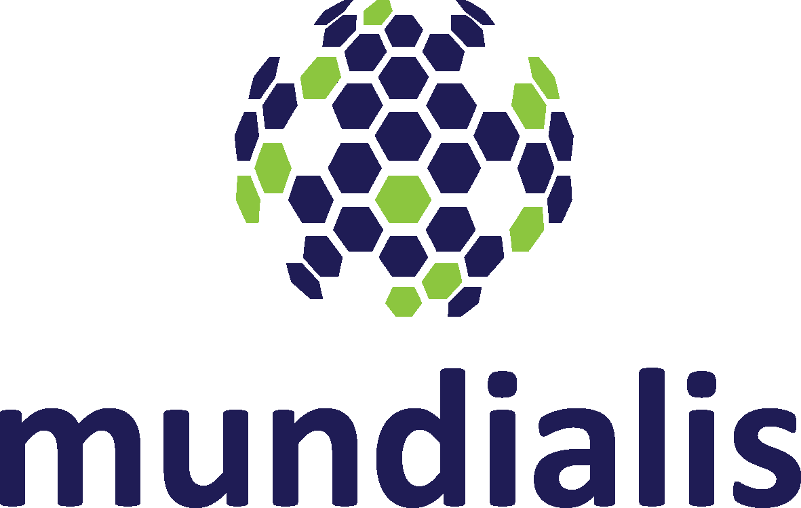

Metadaten sind Informationen, die die Merkmale der eigentlichen Datensätze beschreiben. Sie sind zur Potentialerschließung von Open Data wesentlich. Wichtig ist, dass die Metadaten eine hohe Qualität und damit verbunden auch eine hohe Aktualität besitzen. Nur so kann gewährleistet werden, dass die Fachdaten im jeweiligen Suchkontext auch gefunden werden. Die Erstellung und vor allem die Pflege der hier benötigten Metadaten ist jedoch sehr kosten-, arbeits- und zeitintensiv. Das Projekt hat daher zum Ziel, Wege aufzuzeigen, wie ein dynamisches und automatisiertes Ableiten von Metainformationen aus vorhandenen Daten ermöglicht werden kann. Die angestrebte Projektidee soll Ressourcen freimachen, die ansonsten in Erfassung und Pflege von Metadaten gebunden sind. Darüber hinaus könnten Fachdaten erstmalig mit ausreichenden und vereinheitlichten Metadaten beschrieben und als Open Data publiziert werden. In der Studie werden verschiedene Lösungen zur Metadatenautomatisierung geprüft. Es soll ein System entwickelt werden, welches selbstständig bestehende Metadatensätze mit weiteren zusammenhängenden Daten anreichert. Der vielversprechendste Ansatz wird dann in einem Proof of Concept umgesetzt. Die Ergebnisse des Projektes MetaOpenData sollen dazu dienen, automatisch vollständigere Metadaten zu generieren, um (i) die Erstellung von Metadaten zu vereinfachen und (ii) ein besseres Auffinden und Beurteilen der Eignung von Daten zu ermöglichen.
Sopra Steria Consulting und mundialis sind Projektpartner in dem Vorhaben.
Sopra Steria Consulting zählt zu den Top Business Transformation Partnern in Deutschland. Als ein führender europäischer Anbieter für digitale Transformation bietet Sopra Steria eines der umfassendsten Angebotsportfolios für End-to-End-Services am Markt: Management- und IT-Beratung, Systemintegration, Softwareentwicklung, Application Management, Business Process Services. Unternehmen und Behörden vertrauen auf die Expertise von Sopra Steria, komplexe Transformations vorhaben, die geschäftskritische Herausforderungen adressieren, erfolgreich umzusetzen. Im Zusammenspiel von Qualität, Leistung, Mehrwert und Innovation befähigt Sopra Steria seine Kunden, Informations technologien optimal zu nutzen.
Die Firma mundialis GmbH & Co. KG ist auf die Auswertung von Fernerkundungsdaten und die Verarbeitung von voluminösen Geodaten spezialisiert. Dabei kommen Freie und Open Source Geoinformationssysteme zur Entwicklung von maßgeschneiderten Lösungen zum Einsatz. Ein Fokus liegt auf der Analyse von Sentinel-Satellitendaten, deren Zeitreihen automatisiert ausgewertet und in Form von standardisierten Web-Diensten angeboten werden. mundialis bietet skalierbare Produkte an, die in existierende Anwendungen aufgrund der standardisierten Schnittstellen nahtlos integriert werden. Zu den Kunden von mundialis zählen Raumfahrtagenturen, Forschungsinstitute, internationale Organisationen sowie die Privatwirtschaft aus den Bereichen Telekommunikation, Logistik und Gesundheit.
mundialis GmbH & Co. KG
Till Adams Tel. +49 (0)228 - 387 580 80 Fax. +49 (0)228 - 962 899 57 E-Mail: adams@mundialis.deSopra Steria AG
mundialis GmbH & Co. KG Hans-Henny-Jahnn-Weg 29 Kölnstrasse 99 D-22085 Hamburg 53111 Bonn Telefon +49 40 22 703-0 Tel.: +49 228 – 387 580 80 Fax +49 40 22 703-7999 Fax: +49 228 – 962 899 57 E-Mail: info.de@soprasteria.com
info@mundialis.de